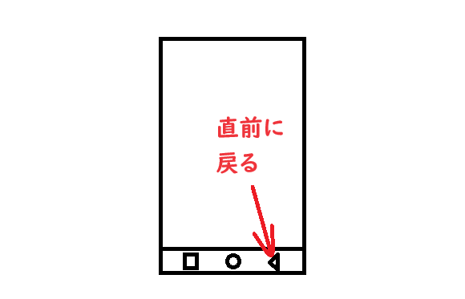

Google マップを開こう 次にホーム画面で Google マップを開きます。 ホーム画面で マップというアプリを探して 開いて下さい。 フォルダの中に 入っていると思いますので フォルダの中を 探す必要があります。 フォルダから出たい場合は スマホ画面の一番下の 〇を押してホーム画面に戻るか スマホ画面の一番下の △を押して前に戻って下さい。 △を押すと 直前に戻る効果があります。 
<< 前へ
次へ >>